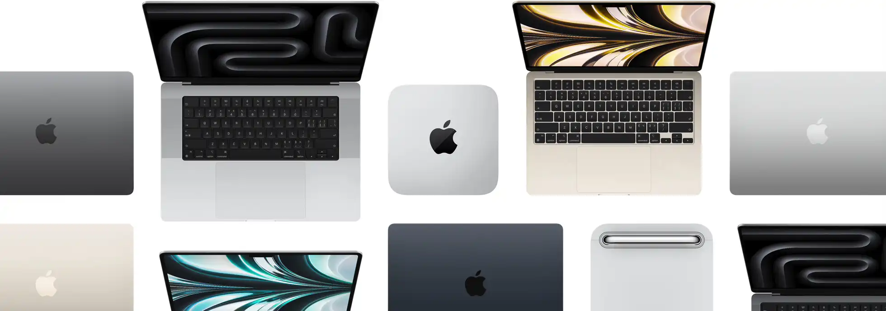
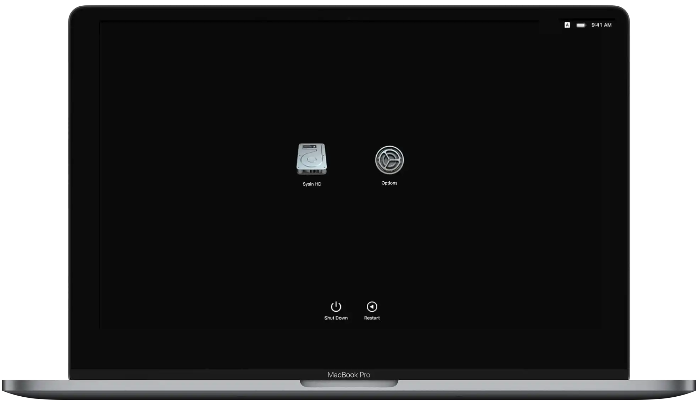
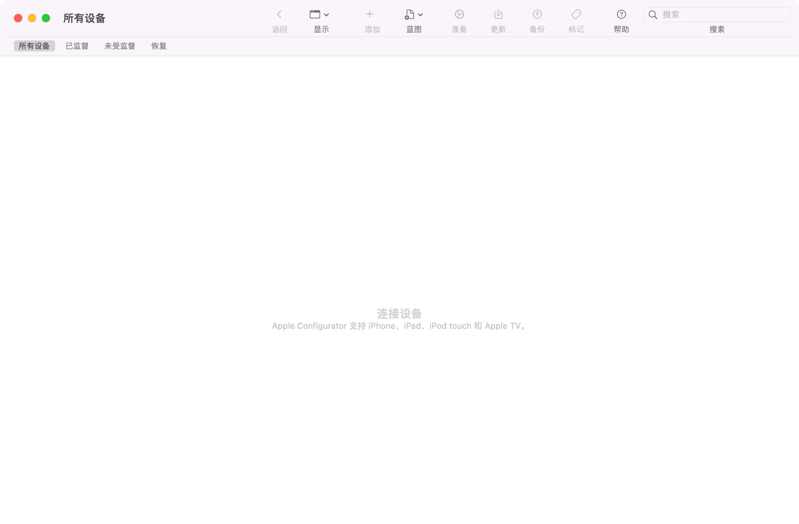
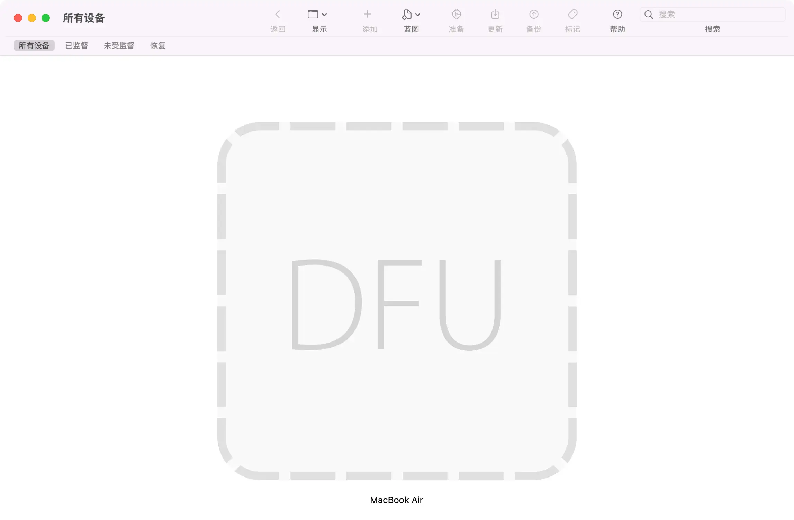
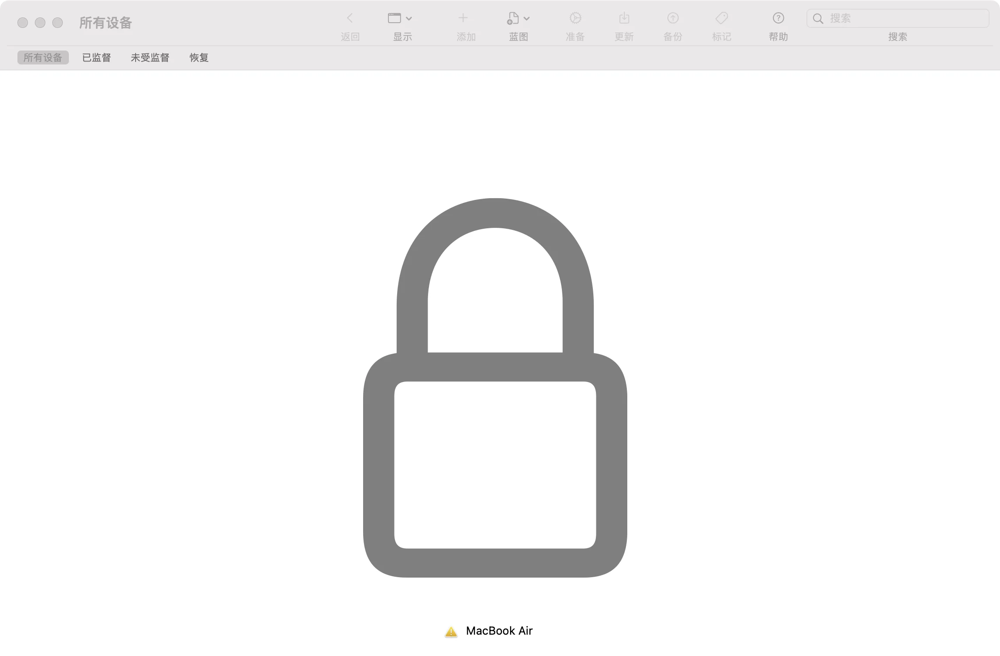
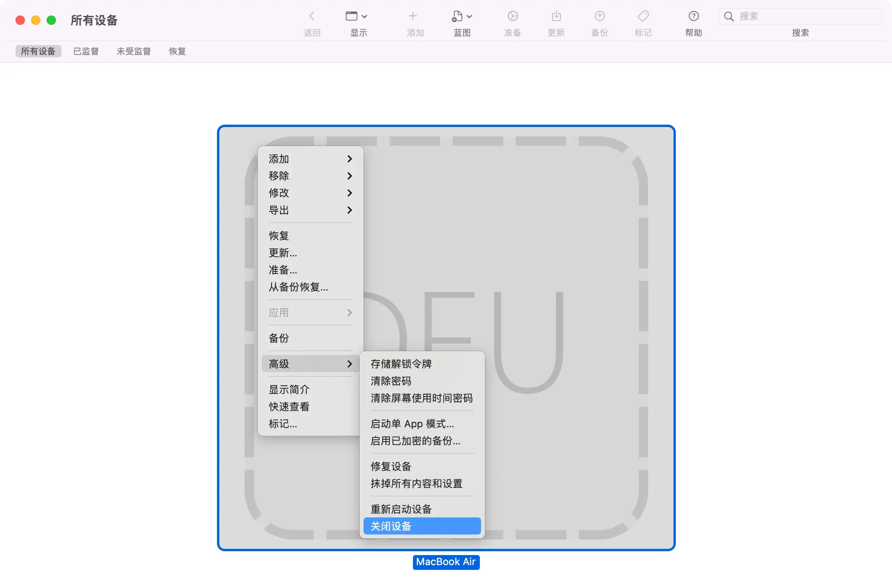
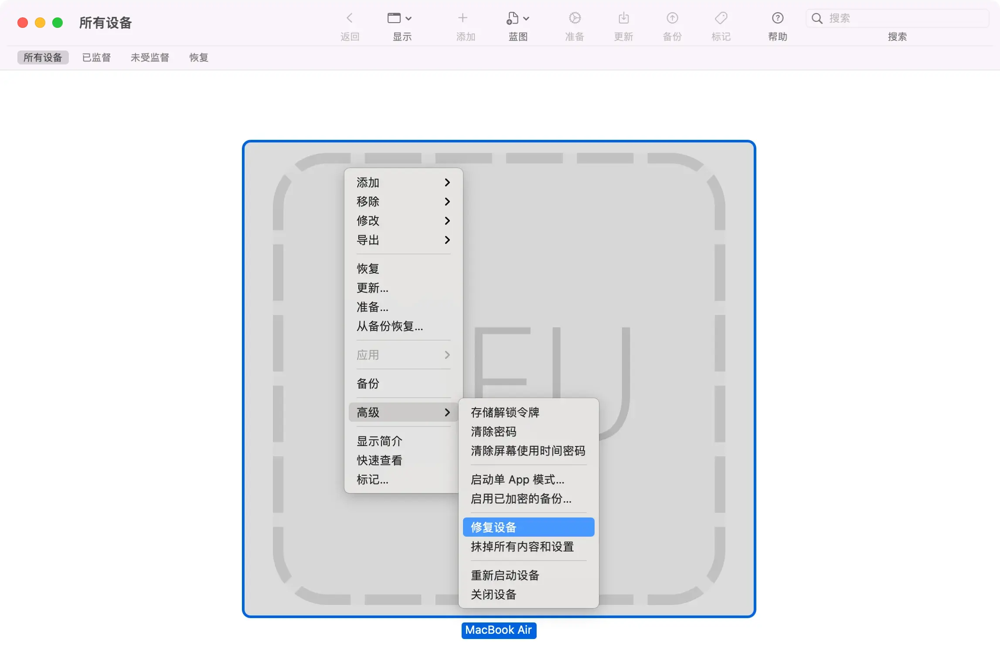
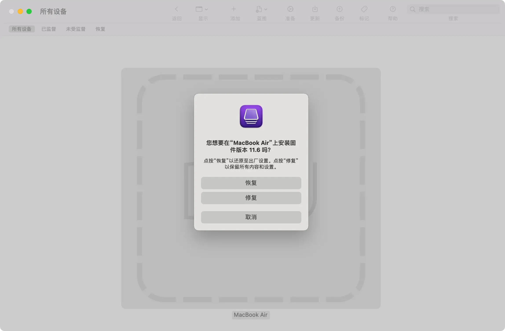
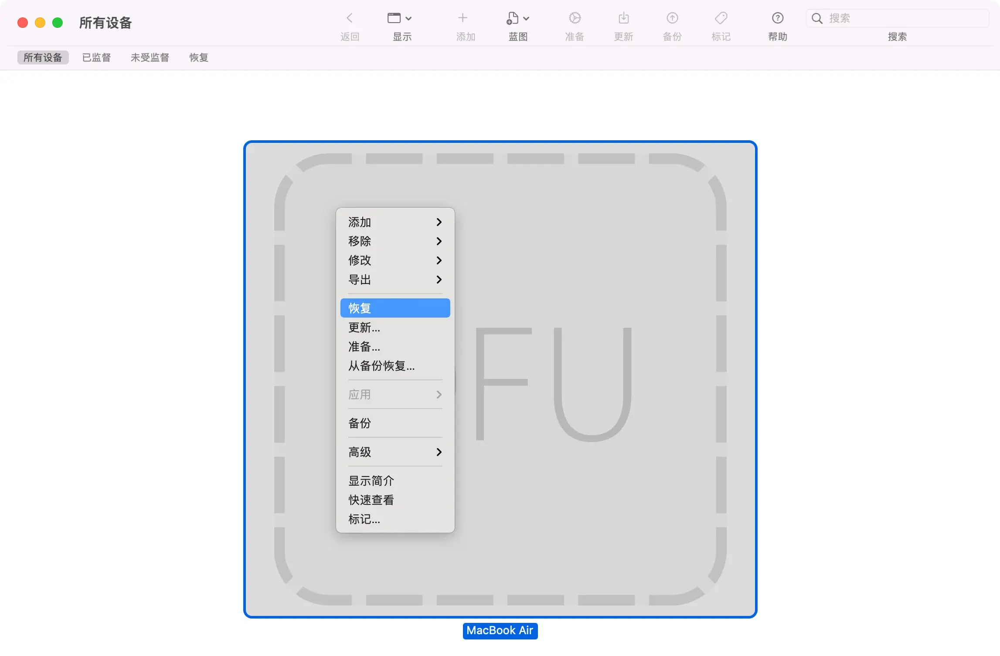

请访问原文链接：使用 DFU 模式修复或恢复 Mac 固件 查看最新版。原创作品，转载请保留出处。

作者主页：sysin.org
Mac computers with Apple silicon，简称 Apple silicon Mac，中文翻译为 “搭载 Apple 芯片的 Mac 电脑”。

2026.04.11 加入了 macOS Tahoe 的链接。
2024.11.18 参照更新的官方文档全新逻辑重写了步骤，更加简洁，也无需按每年发布的新硬件修改，除非出现重大更新。
2024.05.01 更正 iMac 进入 DFU 模式的步骤。感谢热心读者的反馈！
2023.11.04 更新，增加了新机型：搭载 M3 芯片的新款 14、16 英寸 MacBook Pro 和 24 英寸 iMac（2023 年 11 月 7 日发售）
2023.06.13 更新，增加了新机型：搭载 Apple 芯片的新款 15 英寸 MacBook Air、Mac Studio 和 Mac Pro（2023 年 6 月 13 日开售）。
2023.02.07 更新，增加了新机型 MacBook Pro（14、16 英寸，M2 Pro/M2 Max，2023 年）和 Mac mini (M2/M2 Pro 2023 年)。
2022.08.17 更新：增加了新机型 Mac Studio（2022 年）、MacBook Pro（13 英寸，M2，2022 年）和 MacBook Air（M2，2022 年）。
2021.11.28 更新：增加了新机型 2021 款搭载 Apple 芯片的 14 英寸或 16 英寸 MacBook Pro。
2021.05.25 更新：增加了新机型 iMac (24 英寸, M1, 2021 年) 相关内容。
本文最初基于 2020 年搭载 Apple M1 芯片的 Mac 写作，新版硬件相关特性可能有所变更，若有不当之处请指正，谢谢。
一、了解 Apple silicon Mac 的新特性
与基于 Intel 处理器的 Mac 相比，搭载 Apple 芯片 Mac 在系统和固件方面有一定的变化。
1、了解 Apple silicon Mac 机型
本任务适用以下搭载 Apple 芯片的 Mac 电脑：
从 2020 年末推出的某些机型开始，Apple 开启了 Mac 电脑从 Intel 处理器到 Apple 芯片的过渡。2023 年 6 月搭载 Apple 芯片的新款 15 英寸 MacBook Air、Mac Studio 和 Mac Pro 现已正式发售。随着 Mac Pro 配备 M2 Ultra 芯片，Mac 产品系列过渡至 Apple 芯片的计划至此大功告成。
搭载 Apple 芯片的 Mac 电脑：
- 在 2021 年或之后推出的 MacBook Pro，以及 MacBook Pro（13 英寸，M1，2020 年）
- 在 2022 年或之后推出的 MacBook Air，以及 MacBook Air（M1，2020 年）
- 在 2021 年或之后推出的 iMac
- 在 2020 年或之后推出的 Mac mini
- Mac Studio
- 在 2023 年或之后推出的 Mac Pro
- MacBook Neo
在搭载 Apple 芯片的 Mac 电脑上，“关于本机” 会显示一个标有 “芯片” 的项目并跟有相应芯片的名称：

要打开 “关于本机”，请选取苹果菜单 > “关于本机”。
在搭载 Intel 处理器的 Mac 电脑上，“关于本机” 会显示一个标有 “处理器” 的项目并跟有 Intel 处理器的名称。搭载 Intel 处理器的 Mac 也称为基于 Intel 的 Mac。
2、macOS Recovery 启动方式不同
- Apple 芯片：将 Mac 开机并继续按住电源按钮，直至看到启动选项窗口 (sysin)，其中包含一个标有 “选项”（Option）字样的齿轮图标。选择 “选项”，然后点按 “继续”。
- Intel 处理器：确保您的 Mac 已连接到互联网。然后，将 Mac 开机并立即按住 Command (⌘) + R，直至看到 Apple 标志或其他图像。

Apple silicon Mac 启动管理器
3、Apple silicon System Recovery（新特性）
Apple silicon System Recovery 是除了 macOS Recovery 之外的一个新的隐藏恢复选项。如果由于某种原因 macOS Recovery 损坏，System recovery 将与 macOS Recovery 相同的方式加载 (sysin)。您可以使用它重新安装 macOS 和 macOS Recovery。
如果 macOS 和 System Revovery 都被破坏：如果您的 Mac 在启动时出现一个圆圈围绕的感叹号
4、Internet Recovery 已废弃
对比：
Apple 芯片：不存在
Intel 处理器：
- Option-Command-R：通过互联网从 macOS 恢复启动。使用此按键组合来重新安装 macOS 并升级到与您 Mac 兼容的最新版本 macOS。
- Option-Shift-Command-R：通过互联网从 macOS 恢复启动。使用此按键组合来重新安装随 Mac 预装的 macOS 版本或仍可用的最接近版本。
5、Mac Sharing Mode（共享磁盘模式）替代了 Target Disk Mode（目标磁盘模式）
注意：建议使用雷雳 3 或雷雳 4 连接线，否则速度堪忧 (sysin)。
Apple 芯片：长按电源键进入 “选项” > 进入恢复模式 > 菜单 “实用工具” > “共享磁盘”。
链接：在搭载 Apple 芯片的 Mac 和另一台 Mac 之间传输文件- 用 USB、USB-C 或雷雳线缆将两台电脑连接起来。
- 在搭载 Apple 芯片的 Mac 上，选取苹果菜单 > “关机”。
- 按住电源按钮直至 “正在载入启动选项” 出现。
- 点按 “选项”，然后点按 “继续”。
如有要求，请输入管理员账户的密码。
Mac 将以恢复模式打开。 - 选取 “实用工具” > “共享磁盘”。
- 选择要共享的磁盘或宗卷，然后点按 “开始共享”。
- 在另一台 Mac 上，打开 “访达” 窗口，然后点按边栏中的 “网络”（在 “位置” 下方）。
- 在 “网络” 窗口中，连按含共享磁盘或宗卷的 Mac，点按 “连接身份”，在 “连接身份” 窗口中选择 “客人”，然后点按 “连接”。
- 传输文件。
- 文件传输完成后，推出另一台 Mac 上的磁盘。
Intel 处理器：同时按住电源键和 T 键。
链接：使用目标磁盘模式在两台 Mac 电脑之间传输文件- 用 FireWire 或雷雳线缆将两台电脑连接起来。
- 在要以目标磁盘模式用作磁盘的 Mac 上，请执行以下一项操作：
- 如果电脑关闭，则在按住 T 键的同时启动它。
- 如果电脑已开机，请选取苹果菜单 > “系统设置” > 通用，点按 “启动磁盘”，然后点按 “目标磁盘模式”。
当电脑启动后，就会在另一台电脑的桌面上出现一个磁盘图标。
- 您可以将文件拖入或拖出磁盘来传输它们。
- 将磁盘图标拖移到废纸篓，将其推出。
在拖移时，废纸篓图标会变为 “推出” 图标。 - 在用作磁盘的 Mac 上，按下电源按钮将它关闭，然后断开电缆连接。
6、安全模式（启动方式不同）
操作方式如下 (sysin)：
以安全模式启动配备 Intel 处理器的 Mac
- 在 Mac 上，选取苹果菜单 > “关机”。
Mac 关机后，等待 10 秒钟。 - 重新启动 Mac，然后立即按住 Shift 键。
- 看到登录窗口时松开 Shift 键。
- 在 Mac 上，选取苹果菜单 > “关机”。
以安全模式启动搭载 Apple 芯片的 Mac
- 在 Mac 上，选取苹果菜单 > “关机”。
Mac 关机后，等待 10 秒钟。 - 按住电源按钮直至启动磁盘和 “选项” 出现。
- 按住 Shift 键，然后在安全模式中点按 “继续”。
- 在 Mac 上，选取苹果菜单 > “关机”。
7、Apple silicon Mac “外部启动” 默认开启
参看：
Apple 芯片：在搭载 Apple 芯片的 Mac 上更改安全性设置。
Intel 处理器：打开 “启动安全性实用工具”
8、macOS IPSW 软件包
没错，就像 iOS，Apple silicon Mac 可以通过 IPSW 文件进行固件恢复和更新（通过 Apple Configurator 2）。
更新：macOS Sonoma 及更新版本中，使用 Finder 即可（无需 Apple Configurator 2）。
9、DFU 模式
DFU 的全称是 Device Firmware Upgrade，即 iOS 固件的强制升降级模式。Apple silicon Mac 同样可以启动到 DFU 模式。
如何启动到 DFU 模式，将在下文 “步骤 2：准备目标 Mac” 描述 (sysin)。
10、系统版本是否可以降级？
Apple silicon Mac 的 macOS 版本仍然可以降级。
默认启用 “完整安全性”（等于 iOS），需要将安全策略设置为 “降级安全性”，详见：在搭载 Apple 芯片的 Mac 上更改启动磁盘的安全性设置。
对比参看：关于搭载 Apple T2 安全芯片的 Mac 上的 “启动安全性实用工具”
11、了解 Apple silicon Mac 恢复系统的方式
相比搭载 Apple T2 安全芯片且基于 Intel 的 Mac 电脑，搭载 Apple 芯片的 Mac 除了少了 Internet Recovery，其他恢复方式是类似的，但是可以手动下载 ipsw 进行修复或者恢复，这样可以指定版本。
- macOS Recovery
- System Recovery - (如果 macOS Recovery 不可用，将自动启动)
- macOS USB 启动安装 - (“外部启动” 默认开启，操作方式 并无变化，除了引导安装器的按键不同)
- Intel 处理器：将 Mac 开机或重新启动后，立即按住 Option (Alt) ⌥ 键。出现可引导宗卷的黑屏时，松开 Option 键。
- Apple 芯片：将 Mac 开机并继续按住 电源按钮，直到看到启动选项窗口，其中会显示可引导宗卷。
- Finder (macOS 14+) 或 Apple Configurator 2 REVIVE（修复）选项 - 将修复固件并重新安装 macOS Recovery（更新固件并将 recoveryOS 更新到最新版本），用户数据仍然保留在 SSD 中
- Finder (macOS 14+) 或 Apple Configurator 2 RESTORE（恢复）选项 - 将重新安装 macOS Recovery, 将抹掉整个磁盘重新安装 macOS，当然用户数据也会抹掉
本文主要描述使用 Finder (macOS 14+) 或 Apple Configurator 2 恢复系统。
二、准备和要求
我们需要一台额外的 Mac 才能完成相关任务，这里称之为 “主 Mac”。我们将要被修复或恢复的 Mac 称之为 “目标 Mac”。
一台额外的 Mac，我们这里称之为 “主 Mac”，配备 Type-C 接口，Intel 处理器和 Apple 芯片的机型都可以，笔记本电脑和台式电脑都可以。
“主 Mac” 系统版本 macOS Monterey 12.4 及以上（建议当前最新版）。
如果 “主 Mac” 系统为 macOS Monterey 或 macOS Ventura 需要下载 Apple Configurator 2。macOS Sonoma 及更新版本使用 “访达”。
在 “主 Mac” 上下载 macOS IPSW 格式软件。
- macOS Tahoe 26.6.2 (25G83) 正式版 ISO、IPSW、PKG 下载
- macOS Sequoia 15.7.9 (24G830) 正式版 ISO、IPSW、PKG 下载
- macOS Sonoma 14.8.9 (23J631) 正式版 ISO、IPSW、PKG 下载
- macOS Ventura 13.7.8 (22H730) 正式版 ISO、IPSW、PKG 下载
- macOS Monterey 12.7.6 (21H1320) 正式版 ISO、IPSW、PKG 下载
- macOS Big Sur 11.7.11 (20G1443) 正式版 ISO、PKG、DMG、IPSW 下载
Apple Configurator 2 将自动下载最新版 IPSW 固件（类似 iOS），推荐手动下载到本地（可以指定版本，并且速度更快）。
USB-C to USB-C Cable：同时支持数据传输和充电的 USB-C 至 USB-C 连接线，例如部分 Apple 产品随附的 Apple USB-C 充电线。包括雷雳 4、雷雳 / USB 4、雷雳 3 或 USB 3。
Apple 官方文档中表示 USB-C 连接线必须 “同时支持数据传输和充电”，“请勿使用雷雳 3 充电线”，常规雷雳 3 线缆当然同时支持电源和数据。
早期有 “支持的 USB-A 转 USB-C 连接线”，也就是说支持 macOS Monterey 的带 USB-A 端口的主 Mac 也是支持的，不过此类机型已经或者即将停止软件更新支持，故本文不将其明确列入要求。
线缆的连接：“主 Mac” 可以任意 C 口，目标 Mac（要被修复或恢复的 Mac）必须是指定 C 口即 “DFU 端口”（点击查看官方说明）。
确保两台电脑都已接入电源，有效的互联网连接。
三、准备目标 Mac 电脑以进行修复或恢复
准备笔记本电脑以进行修复或恢复
如果要修复或恢复的目标 Mac 是笔记本，请按照如下步骤操作。
你将使用 USB-C 连接线来连接两台电脑，然后在目标电脑上进入 DFU（设备固件更新）模式。
确保两台电脑都已接入电源。
在目标 MacBook Pro 或 MacBook Air 上，识别 DFU 端口，然后将 USB-C 连接线插入这个端口。
在主 Mac 上：
- 将 USB-C 连接线的另一端插入任一 USB-C 端口。
- 确保这台 Mac 已接入互联网。
- 如果这台 Mac 运行的是 macOS Ventura 或 macOS Monterey，请打开 Apple Configurator。
在目标 Mac 上，进入 DFU 模式：
a. 按住电源按钮最多 10 秒钟，直到 Mac 关机。（如果 Mac 配有触控 ID 按钮，这个按钮也是电源按钮。）如果 Mac 反而开机了，请重复这个步骤。
b. 按下并松开电源按钮，然后_立即_同时按住内建键盘上的以下四个按键：
- 键盘左侧的 Control ⌃ 键
- 键盘左侧的 Option ⌥ 键
- 键盘右侧的 Shift ⇧ 键
- 电源按钮

c. 搭载 Apple 芯片的 Mac 笔记本电脑：
- 按住所有这四个按键约 10 秒钟，然后松开除电源按钮以外的所有按键。
- 继续按住电源按钮最多 10 秒钟。当另一台 Mac 在 “访达” 或 Apple Configurator 中显示 DFU 窗口时，请松开电源按钮。如果那台 Mac 先显示一条提醒，询问你是不是允许配件进行连接，请松开电源按钮并点按 “允许”。目标 Mac 现在会进入 DFU 模式，并且应该会显示空白屏幕。
d. 搭载 T2 芯片的 Mac 笔记本电脑：按住所有这四个按键约 3 秒钟。当另一台 Mac 在 “访达” 或 Apple Configurator 中显示 DFU 窗口时，请松开所有按键。如果那台 Mac 先显示一条提醒，询问你是不是允许配件进行连接，请松开所有按键并点按 “允许”。目标 Mac 现在会进入 DFU 模式，并且应该会显示空白屏幕。
请按照下面的步骤使用 “访达” 或 Apple Configurator 进行修复或恢复。
准备台式电脑以进行修复或恢复
如果要修复或恢复的目标 Mac 是台式机（iMac、Mac mini、Mac Studio 或 Mac Pro），请按照如下步骤操作。
你将使用 USB-C 连接线来连接两台电脑，然后在目标电脑上进入 DFU（设备固件更新）模式。
在目标 Mac 上，识别 DFU 端口，然后将 USB-C 连接线插入这个端口。
在主 Mac 上：
- 将 USB-C 连接线的另一端插入任一 USB-C 端口。
- 确保这台 Mac 已接入电源和互联网。
- 如果这台 Mac 运行的是 macOS Ventura 或 macOS Monterey，请打开 Apple Configurator。
在目标 Mac 上，进入 DFU 模式：
a. 拔下 Mac 的电源线。
b. 按住电源按钮。
c. 继续按住电源按钮，同时将 Mac 接入电源，然后继续按住电源按钮最多 10 秒钟。当另一台 Mac 在 “访达” 或 Apple Configurator 中显示 DFU 窗口时，请松开电源按钮。如果那台 Mac 先显示一条提醒，询问你是不是允许配件进行连接，请松开电源按钮并点按 “允许”。目标 Mac 现在会进入 DFU 模式，并且应该会显示空白屏幕。请按照下面的步骤使用 “访达” 或 Apple Configurator 进行修复或恢复。
关于 DFU 模式的补充
验证状态
事实证明，有时候让 Apple silicon Mac 进入 DFU 模式并不那么容易。往往需要按照 Apple 的描述多尝试几次，如果无法进入 DFU 模式需要重新开始，以下几个要点请参考：
a. 目标 Mac 必须关机才能开始。
b. 同时按住 电源键、右 Shift 键、左 Control 键 和 左 Option 键 10 秒（看着打开 Apple Configurator 2 的画面计数，可以让电脑显示秒数）然后松开除电源键以外的所有键 (sysin)。继续按住电源按钮 8 秒，整个过程 18 秒。如果计数超过 20 秒并且没有看到 DFU 图标，需要重新尝试该过程。
c. 当目标 Mac 正确启动到 DFU 模式时，Apple Configurator 2 中显示一个大的 DFU 图标（如下图）。此时可以松开电源按钮。
在 “主 Mac” 的 Apple Configurator 2 状态变化如下：
（1）目标 Mac 尚未启动到 DFU 模式，显示如下：

（2）目标 Mac 已经正确启动到 DFU 模式

（3）目标 Mac 线缆连接正确，已经启动到了恢复模式选择窗口（仅供参考，这里不需要启动到该模式）

退出 DFU 模式的方法
这里描述的是退出 DFU 模式的方法，并非需要此操作步骤。操作成功后会自动退出 DFU 模式。
- 在 DFU 图标上点击右键，菜单 “高级”，选择 “重新启动设备” 或者 “关闭设备”

上述操作如果无效，长按电源按钮（超过 4 秒）即可关闭设备并退出 DFU 模式。
恢复操作成功后会自动退出 DFU 模式。
四、如何进行修复或恢复
在按照上文所述准备笔记本电脑或准备台式电脑后，请使用 “访达” 或 Apple Configurator 来修复或恢复目标 Mac，具体使用哪个工具取决于另一台 Mac 上使用的 macOS 版本。
Mac 已准备好从 “访达” 进行修复或恢复（macOS Sonoma 或更高版本）：

Mac 已准备好从 Apple Configurator 进行修复或恢复（macOS Monterey 12.4 或更高版本）：

修复 (保留用户数据)
先尝试修复。修复可能比恢复要快，而且不会抹掉 Mac。
- 如果使用的是 “访达”（需要 macOS Sonoma 或更高版本）：
- 在 “访达” 窗口的边栏中，选择 “Mac”，如上图所示。
- 点按 “修复 Mac” 按钮，然后点按 “继续” 进行确认。或者按住 Option 键然后点按 “修复 Mac” 按钮，并浏览到已下载的 IPSW 文件。
- 如果使用的是 Apple Configurator（需要 macOS Monterey 12.4 或更高版本）：
- 打开 Apple Configurator。
- 在 Apple Configurator 窗口中，为目标 Mac 选择 “DFU”，如上图所示。
- 从菜单栏中，选取 “操作”>“高级”>“修复设备”。或者将下载的 IPSW 文件拖拽到 DFU 图标上，在弹出的菜单中选择 “修复”。

图：Apple Configurator 修复设备
图：将 IPSW 文件拖拽到 DFU 图标上弹出的菜单，这里选择 “修复”
- 修复完成后，目标 Mac 会自动重新启动。如果它关机，请按下电源按钮将它开机。
- 如果系统提示你选择要恢复的宗卷，请选择所需的宗卷（例如 Macintosh HD），然后点按 “下一步”。
- 如果系统提示你选择一个你知道密码的用户，请按提示操作，然后输入这个用户的登录密码。点按 “下一步”，然后点按 “重新启动”。
- 搭载 Apple 芯片的 Mac：修复后的 Mac 会载入启动选项，其中包括 “选项” 齿轮图标。选择你的启动磁盘（例如 Macintosh HD），然后点按它下方显示的 “继续” 按钮。
- 修复的 Mac 会完成启动，随后这个过程便告完成。
恢复 (全新安装系统)
这是全新安装系统并恢复出厂设置。将清空所有数据。
如果 Mac 无法修复，请按照以下步骤来抹掉它并将它恢复为出厂设置。
- 如果使用的是 “访达”（需要 macOS Sonoma 或更高版本）：
- 在 “访达” 窗口的边栏中，选择 “Mac”，如上图所示。
- 点按 “恢复 Mac” 按钮，然后点按 “恢复并更新” 进行确认。或者按住 Option 键然后点按 “修复 Mac” 按钮，并浏览到已下载的 IPSW 文件。
- 如果使用的是 Apple Configurator（需要 macOS Monterey 12.4 或更高版本）：
- 打开 Apple Configurator。
- 在 Apple Configurator 窗口中，为目标 Mac 选择 “DFU”，如上图所示。
- 从菜单栏中，选取 “操作”>“恢复”，然后点按 “恢复” 进行确认。或者将下载的 IPSW 文件拖拽到 DFU 图标上，在弹出的菜单中选择 “恢复”。

图：Apple Configurator 恢复
图：将 IPSW 文件拖拽到 DFU 图标上弹出的菜单，这里选择 “恢复”
- 恢复完成后，目标 Mac 会自动重新启动。如果它关机，请按下电源按钮将它开机。
- 如果系统提示你选择 Wi-Fi 网络或连接网线，请按提示操作。
- 搭载 Apple 芯片的 Mac：
- 如果系统提示你登录，请使用之前在这台 Mac 上使用的那个 Apple 账户登录。
- 当设置助理打开时，使用它来完成 Mac 的设置。
- 搭载 T2 芯片的 Mac：
- 恢复的 Mac 会在通过互联网从 “macOS 恢复” 启动时显示一个旋转的地球。当系统提示你选取语言时，请按提示操作。
- 如果系统提示你登录，请使用之前在这台 Mac 上使用的那个 Apple 账户登录。然后点按 “退出到恢复”。
- 当你在 “恢复” 中看到实用工具列表时，请选取用于 安装或重新安装 macOS 的选项。
- macOS 安装完成后，Mac 会重新启动并打开设置助理。使用设置助理来完成 Mac 的设置。
五、题外话: 对比修复基于 Intel 的 Mac
使用 Apple Configurator 修复或恢复基于 Intel 的 Mac 的差异：
- 目标 Mac 使用右侧的 USB-C（Apple 芯片 Mac 笔记本使用左侧端口，台式机使用右侧端口）。
- 默认仅有 “修复” 选项，将固件（T2 芯片固件）更新到最新版本（但有一个例外如下）。
- 仅限 Mac Pro（2019 年）：恢复固件、抹掉所有数据并重新安装最新版本的 recoveryOS 和 macOS。
下表列出了修复或恢复 iOS 及衍生系统设备与 Mac 的差异 (sysin)。
| 设备 | 修复 | 恢复 |
|---|---|---|
| iPhone 和 iPod touch | 可能保留用户数据（如果可恢复）。 | 抹掉用户数据。抹掉并重新安装最新版本的 iOS。 |
| iPad | 可能保留用户数据（如果可恢复）。 | 抹掉用户数据。抹掉并重新安装最新版本的 iPadOS。 |
| Apple TV | 可能保留用户数据（如果可恢复）。 | 抹掉用户数据。抹掉并重新安装最新版本的 Apple tvOS。 |
| 搭载 Apple 芯片的 Mac | 将 sepOS 和 recoveryOS 更新到公开发布的最新版本。可能保留用户数据（如果可恢复）。 | 抹掉用户数据。抹掉并重新安装 sepOS、recoveryOS 和 macOS 公开发布的最新版本。 |
| 搭载 Apple T2 安全芯片且基于 Intel 的 Mac | 仅更新 T2 芯片固件。可能保留用户数据（如果可恢复）。 | 抹掉用户数据。仅抹掉并重新安装 T2 芯片固件。必须使用 “互联网恢复” 重新安装 recoveryOS 和 macOS。 |
文章结束，感谢观看。

文章用于推荐和分享优秀的软件产品及其相关技术，所有软件提供免费版或试用版。内容若侵犯了您的版权，请联系作者删除。如果您喜欢这篇文章，或者觉得它对您有所帮助，亦或发现有不当之处；欢迎发表评论，也欢迎分享这个网站，或者赞赏一下，谢谢！提示：捐赠或赞赏属于自愿赠予行为，提交后即表示您对作者的支持与认可。为避免误操作，请在确认前仔细检查金额，支付完成后将无法撤销或退还。
 支付宝赞赏
支付宝赞赏  微信赞赏
微信赞赏赞赏一下
敬请注册！点击 “登录” - “用户注册”（已知不支持 21.cn/189.cn 邮箱）。 请勿使用联合登录（已关闭）。